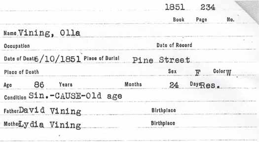

Census Data
| 1790 | 1800 | 1810 | 1820 | 1830 | 1840 | |
| David Vining | M 16 and upward | M 45 and over | M 45 and over | M 45 and older | ? | dead |
| Lydia (Torrey) Vining | dead | |||||
| Mary (Vining) Vining | F | F 45 and over | F 45 and over | F 45 and older | dead | |
| (Bashti or Vashti) Vining | dead | |||||
| Olive Vining | [see note below] | F 26–45 | [see note below] | F 45 and older [see note below] |
? | ? |
| Richard Vining | [see note below] | married and living in separate household | ||||
| Asa Vining | [see note below] | married and living in separate household | ||||
| David Vining Jr. | [see note below] | married and living in separate household | ||||
| Sally Vining | [dead?] | [see note below] | [see note below] | [dead?] | ||
| Bela Vining | dead | |||||
| Bela Vining | M under 16 | married and living in separate household | ||||
| John Vining | M under 16 | M 16–26 | married and living in separate household | |||
| Noah Vining | M under 16 | M 16–26 | married and living in separate household | |||
| Lydia Vining | [see note below] | [see note below] | married and living in separate household | |||
| Warren Vining | M under 16 | [see note below] | [see note below] | married and living in separate household | ||
| Polly Vining | [see note below] | F 10–16 | married and living in separate household |


Death Data
Death record for Olive Vining, daughter of David Vining and Lydia (Torrey) Vining: